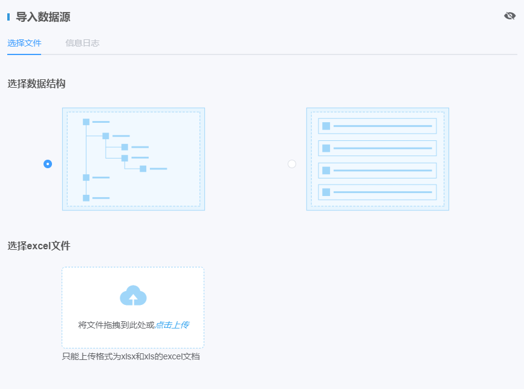

| 1. | 在主菜单中选择“预案大脑→数据源管理”菜单，内容显示区显示“数据源管理”页面。 |
| 2. | 单击页面右上角〖下载模板〗按钮，将模板保存至本地。 |
| 3. | 选择所需要的模板类型（树形结构或单层结构），打开并按照该模板录入相关数据。 |
| 4. | 单击页面右上角〖导入数据源〗按钮，弹出“导入数据源”窗口。如Fig 8所示。 Fig 8 导入数据源

|
| 5. | 在页面上方选择数据结构 |
| 6. | 选择excel文件上传。只能上传格式为xlxs和xls的excel文档。 可以通过文件拖拽或点击上传两种方式进行上传操作。
|
| 7. | 单击“信息日志”页签，查看信息日志详情 用户可以通过查看信息日志了解数据导入情况，包括：导入总数、成功导入数量、重复个数、错误个数。
|